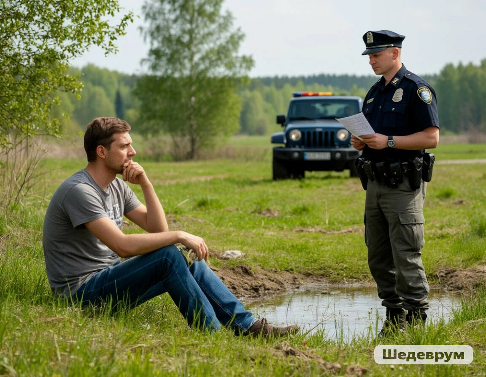

Вы достаёте телефон и набираете номер инспекции. Мужчина бледнеет: «Слушай, мы же уже всё убрали! Зачем вызывать?» Вы говорите: «Вы загрязнили питьевой источник. Это серьёзное нарушение. Штраф полагается по закону». Женщина начинает плакать. Мужчина злится: «Да ты сам сказал, что вода очистится! Зачем ты нас запугивал? Мы бы и так больше не стали!» Приезжает инспекция. Инспекторы выписывают штраф. Мужчина, уезжая, кричит: «Никогда сюда больше не приедем! И другим скажем, чтобы не ехали!» Ты остаёшься у чистого родника, но чувствуешь, что перегнул палку. Люди уехали озлобленные и теперь будут рассказывать всем, что здесь работают злые экологи, которые только штрафуют
